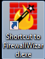
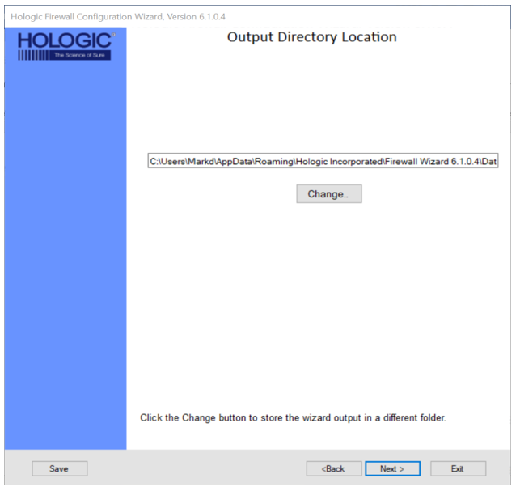
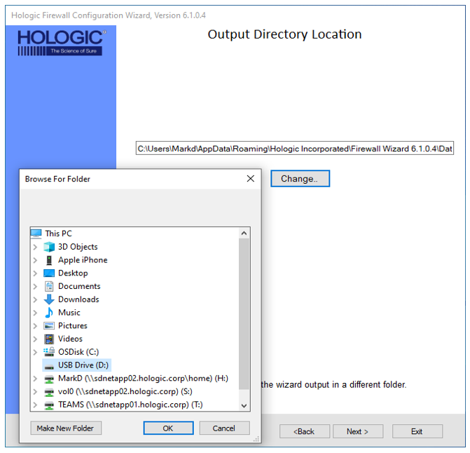
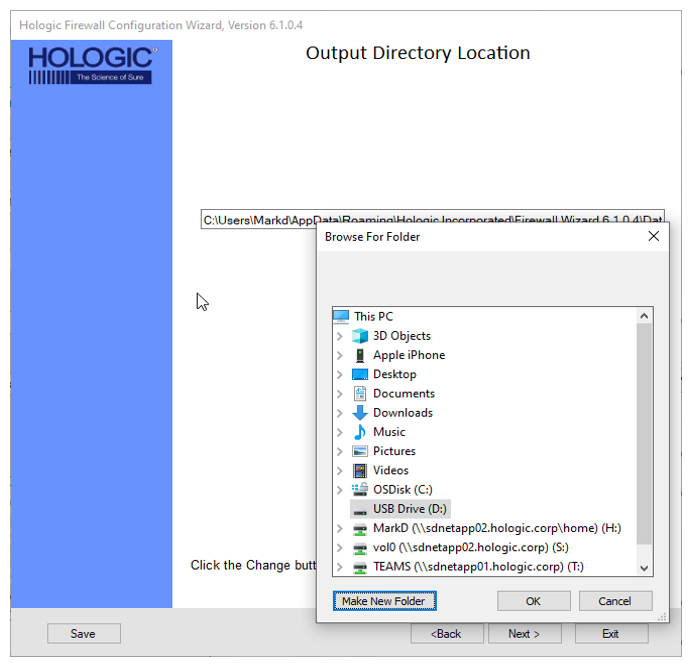
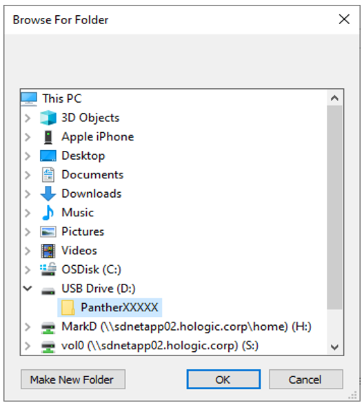
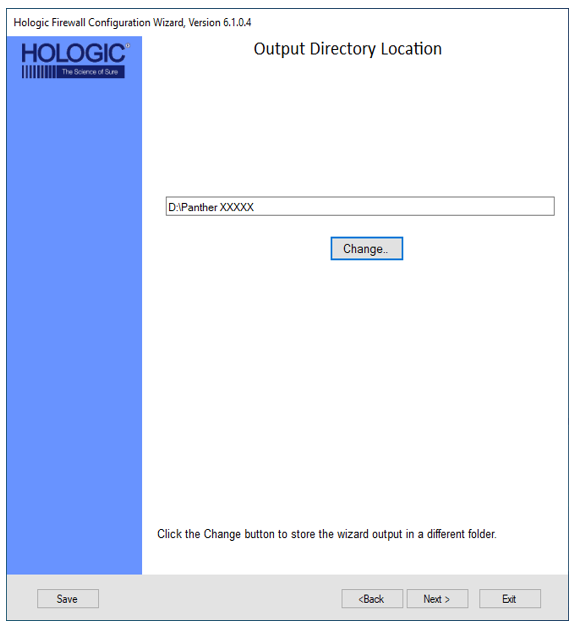

Programming the Firewall
This procedure applies to the Cisco ASA 5505 and Cisco ASA 5506 Firewalls.
|
|
Caution—If you are setting up a System with LINK, a 5506 is required. |
Note:
Screen shots below are for reference ONLY. Your screens may differ.
All information entered into the Firewall Wizard will come from the Panther Site Assessment.
Only steps that require further action are described.
If selecting no and no further input is needed, it is not described.
|
|
Warning—PART B - Connecting the Cisco ASA 5505/5506 to FSE Laptop MUST BE COMPLETED BEFORE CONTINUING |
 Open the Firewall Wizard.
Open the Firewall Wizard.

- Confirm Steps 1-4 have been completed and select Next >.
- Select the action you would like to perform.
- Select Output Directory Location.
- Select Next, if the default location is acceptable

- To choose a different location, select Change.

- Select Make New Folder.

- Enter the folder name and select OK.

- Select Next..

- Verify Firewall SW connection to your laptop.
- Enter the Site Information.
- Complete Cisco Syslog Setup.
- Enable Windows Update Server.
- Create a Read-only User Account.
- VPN Setup (Only applicable on the 5506)
- Obtain an External Interface IP Address.
- Domain Name Server (DNS) Settings
- Network Printer
- Panther Link Dashboard Setup
- Track System
- Grifols Middleware
- Remote Diagnostics
- Laboratory Information System (LIS)
- Review Your Input
- Proceed to Setting a Panther IP Address on the Panther Workstation


 button at the top of the page to send feedback, comments, or change requests.
button at the top of the page to send feedback, comments, or change requests.